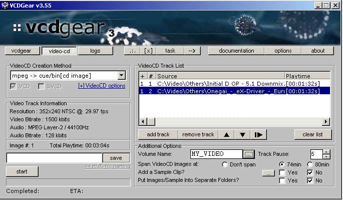

|
|
Batch Processing - Distributions
Making distributions of your own
video is relatively quick and easy when you use the
batch processing feature. In general, video distributions can broken down
into 3 parts:
[1. Your MPEG Video(s)] ------- [2. Your trademark/copyright info] ------- [3. video info]
Of course you can
add more parts if necessary, but this guide will show an example
of how to get a simple distribution ready.
A more in-depth guide has been written by MACKerMD and can be found here.
Part 1 - Adding your tracks
You have a number of
MPEG files that you want in your VideoCD distribution -- one for
each track. First you will need to create your VCD project file.
Go under the VideoCD
tab, add each MPEG file to the track list as you want it to appear
in your release. Then put in a filename to save it to.

Click the [ -->
] button! Your project will be temporarily added to the
Batch Processor as a new task.
If you want to keep
the project file instead, click on the Task button and
Save Task Project. Then Open Batch List.
The default error
handling method is to STOP on errors and YES for all
queries (questions). Right-clicking on the task and clicking on Properties
will allow you to change them if you want.
Part 2 - RARring and adding your trademark file
You want to
distribute your output from Part 1 in a RAR archive? Click on Add Task.
Choose the Add to RAR archive with... File(s) generated by previous task options.
Want the RAR to be split up into volumes? Just
pick a volume size
(15,000,000 byte and
20,000,000 byte volume options)
Don't forget to specify the RAR archive output name! Click OK when you're finished.
Adding in your
trademark / copyright information to the RAR can be done in a similar
fashion. Click Add Task... except this time choose Add to RAR
archive with...Selected file(s).
Put in the same RAR filename as before --- your files should be added to the existing RAR.
If your trademark
/ copyright info NEVER changes, you can do this even
faster! Follow the
exact same procedure to add in your trademark file..
except this time do it in
an EMPTY batch processor list. Click on Save List
in the Batch List menu of
the Batch Processor. Save the list to a file.
The next time you
want to add in your trademark info (e.g. after you do
Part 1 and the first part of Part 2), just click Insert List in the Batch List
menu.
Your trademark task will be added immediately after the RAR task!
Part 3 - Adding an information file to your distribution
Follow the procedure
from Part 2 about adding in your trademark files -- this time,
instead of picking your trademark info files, select your distribution
video
information file.
Part 4
Click START button when ready. If you run into failed tasks, check the Log page.
What you can also do
If you put all your
info and trademark files in one directory, you can add a single task
to add everything in that directory to your RAR.
This is a very basic
guide to batch processing in VCDGear. Batch processing is
flexible
in VCDGear so be creative :-)